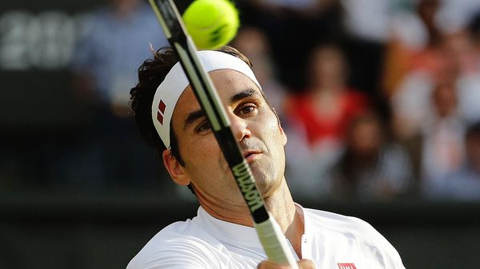

Jul 09, 2026 05:22 AM

ROGER FEDERER won 20 major tournaments during his career. Wimbledon, which started this year on June 29th, was his happiest hunting ground: he won eight times, a men’s record. Yet as Mr Federer himself has noted, he won only slightly more than half of the thousands of points he played during his career.
This year Mr Federer, who retired in 2022, has been watching Wimbledon from the crowd. But those less familiar with the game than he is may wonder how he—or the current crop of top players—manage to convert such a narrow advantage into a winning record.
Much of the answer lies in tennis’s scoring system. Stringing points into games, games into sets, and sets into a match gives plenty of time for a small advantage to compound into a convincing win. Analysis by The Economist of data from major tournaments between 2014 and 2025 shows that, in the men’s game, a player that is just 1% more likely to win the average point is 12.5% more likely to win the match. For women, the figure is about 10.5%.
But there are quirks. One is the serve: a player is more likely to win a point when serving. Wimbledon’s fast grass courts enhance the advantage, reducing the returns to non-serve skills by around 2.5% compared with other surfaces. Another oddity arises from the fact that men play up to five sets, while a women’s match is capped at three. Our analysis suggests this reduces the returns to skill in the women’s game by 25% compared to the men’s—which makes Martina Navratilova’s nine Wimbledon trophies look even more impressive.
Tennis enthusiasts have suggested more efficient ways of doing things. In 1992, Graham Pollard, a statistician then at the University of Canberra, suggested replacing the current game-set-match structure with what would be essentially a pair of tie-breaks. Players would alternate serve until one managed to pull ahead by a certain number of points (in existing tie-breaks a two-point lead is enough to win, but a higher number would reduce the effect of luck). If one player wins both games, he is the victor; if not a new pair is played. Dr Pollard reckoned his scheme could identify the better player in half the time of a typical match.
Since many fans enjoy tennis for its own sake, that might not be a popular selling point (it would also leave broadcasters with a lot of dead air to fill). So how can a player make the most of a slim edge under the current rules?
Being able to rise to the occasion is one important ability. A paper published in 2001 by Franc Klaassen and Jan Magnus, a pair of economists, found that serves at Wimbledon lose some of their power on break points. The serving player is 0.8% less likely than usual to win any break point, and 4.6% less likely when the score is 5-5 in the final set. Some players keep their heads better than others. A 2012 study by Julio González-Díaz, a statistician, and his colleagues found that only about half of the top 25 players by ranking were also in the top 25 for this critical ability. Mr Federer was one. As his fans have always known, part of the recipe for his success was his grace under pressure. ■
Curious about the world? To enjoy our mind-expanding science coverage, sign up to Simply Science, our weekly subscriber-only newsletter.